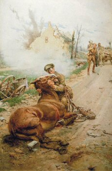

Le 18 octobre, on prépare l'arrivée des chevaux
du D.A.C. Le lendemain, après l'entraînement de la
journée, trois cents hommes marchent sous la pluie vers la gare d'Amesbury, à neuf milles
au sud-est, pour y récupérer les chevaux.
 Le
20 octobre, tôt le matin, plus de six cents chevaux arrivent au camp, ils sont en très mauvaise condition.
Cinq officiers et cent dix-huit soldats arrivent aussi
pour compléter l'unité D.A.C. Ils ont voyagé avec les chevaux
sur le S.S. Montezuma. Les chariots sont restés dans
l'entrepôt du port de Québec, faute de place à bord. Les jours
suivants sont consacrés à l'entraînement des soldats et aux
soins des chevaux. Le
20 octobre, tôt le matin, plus de six cents chevaux arrivent au camp, ils sont en très mauvaise condition.
Cinq officiers et cent dix-huit soldats arrivent aussi
pour compléter l'unité D.A.C. Ils ont voyagé avec les chevaux
sur le S.S. Montezuma. Les chariots sont restés dans
l'entrepôt du port de Québec, faute de place à bord. Les jours
suivants sont consacrés à l'entraînement des soldats et aux
soins des chevaux.
Le 25 octobre, dimanche, un service divin,
facultatif, est offert. Il en est ainsi tous les dimanches
suivants, lorsque les conditions climatiques le permettent.
L'assistance y est nombreuse. Le
lendemain on débute doucement
les exercices avec les chevaux. L'équipement et les chariots
arrivent graduellement chaque jour d'Amesbury par camions (mechanical
transport).
 NOVEMBRE
Le
4 novembre, le Roi George V et la reine Mary passent en
revue les troupes canadiennes. Heureusement qu'il fait beau ce
jour-là car, toute la semaine précédente, les soldats ont dû
s'entraîner sous une pluie incessante pour la parade
cérémoniale à faire devant les souverains. La pluie rend
boueux tous les chemins et empêche le transport de
l'équipement manquant encore à l'unité (des harnais et des
couvertures pour les chevaux, des roues pour les chariots, des
planchers pour les tentes, etc...) La pluie reprend dès le
lendemain de la visite royale. NOVEMBRE
Le
4 novembre, le Roi George V et la reine Mary passent en
revue les troupes canadiennes. Heureusement qu'il fait beau ce
jour-là car, toute la semaine précédente, les soldats ont dû
s'entraîner sous une pluie incessante pour la parade
cérémoniale à faire devant les souverains. La pluie rend
boueux tous les chemins et empêche le transport de
l'équipement manquant encore à l'unité (des harnais et des
couvertures pour les chevaux, des roues pour les chariots, des
planchers pour les tentes, etc...) La pluie reprend dès le
lendemain de la visite royale.
Le 9 novembre, le camp reçoit l'équipement
permettant de fournir une soupe chaude à toutes les heures aux
troupes. On reçoit aussi de la viande fraîche. Les hommes
continuent leurs exercices d'équitation, leurs cours sur le
soin des chevaux, sur les manoeuvres. Mais des selles manquent
encore, et plein d'autre matériel. Celui qu'on reçoit n'est
pas toujours adéquat et doit être retourné, comme ces roues
de chariots qui ne vont pas avec les chariots déjà fournis. De
toutes façons, la troupe n'a encore reçu que trois de la
centaine de chariots qu'elle attend.
Le 15 novembre, première nuit de gel. Il se poursuit les nuits suivantes. Les hommes trouvent l'eau
gelée dans les tuyaux au matin, mais ils n'ont pas froid et
"ils préfèrent le froid à la pluie". À
noter que ce commentaire est, en plus, souligné
dans le journal de l'unité. Or, le sous-officier en charge du
journal ne doit émettre aucun commentaire subjectif, seulement
des faits. Ce petit débordement épistolaire démontre bien le ras de bol
des soldats pour la pluie et leurs conditions de vie. L'équipement continue
d'arriver, les
exercices et les cours se poursuivent aussi. L'entraînement
continue maintenant à l'échelon du bataillon. On ajoute des cours
de lecture de cartes, et de signalisation. Il pleut souvent, et,
certains jours, le temps est trop mauvais pour que les hommes
puissent s'exercer. Ils en profitent pour laver leurs vêtements,
les harnais, préparer le cuir, incluant les bottes.
Le 27 novembre, une grande parade sur la route de
Bustard a lieu le matin. Le Général complimente les troupes
pour leur bonne tenue. Les troupes et les animaux ont un bon
repas le midi, puis le D.A.C. retourne à son camp.
DÉCEMBRE
L'entraînement s'intensifie.
Il se déroule maintenant à l'échelon de la brigade. L'unité fait des simulations en se déployant dans les villages
des environs, et en interagissant avec d'autres unités. Le D.A.C. est une unité dont le
rôle est d'apporter au front tout l'équipement nécessaire
pour que les soldats puissent se battre, les armes, munitions,
rations de nourriture, fourrage pour les chevaux etc....Les hommes
font des test pour trouver la façon optimale de charger les chariots,
transportant ainsi le
plus de matériel possible. Les signaleurs s'exercent à
converger les messages lors de ces simulations de batailles.
Le 11 décembre, pour la première
fois, toute la première division canadienne s'exerce en
formation.
Le 17 décembre, les nouvelles du matin sont que
des croiseurs allemands ont bombardé deux villes côtières
anglaises. Le sous-officier déplore le fait dans le journal de
l'unité, mais y voit aussi un stimulant pour le recrutement de
volontaires dans l'armée britannique.
Ce soir-là une grosse tempête débute, la pluie et de forts
vents soufflent pendant deux jours. Mais, selon le journal, les
troupes du D.A.C. sont en excellente forme. La discipline
s'améliore, les hommes oublient rarement de saluer les
officiers. L'offense "absence sans permission"
diminue.
Le 21 décembre, les congés de Noël débutent.
Officiers et soldats ont droit au transport gratuit par train, cette gentillesse
est bien appréciée par tous. Ces congés sont très courts, et
pris à tour de rôle. Les destinations sont au goût de chacun,
mais, plusieurs vont visiter Londres.
Le 22 décembre, le Colonel Williams revient du
front et donne une conférence aux officiers. Il transmet des
informations concernant le transport, les approvisionnements,
les tactiques pour se retrancher des machines volantes, la
couverture par l'artillerie, etc... Il affirme que l'armée
britannique fait un bon travail au front et que leurs armes sont
supérieures à celles de l'ennemi.
Un adjudant lui demande si "le ravitaillement qui arrive
par transport motorisé se rend jusqu'à la ligne de feu?"
La réponse du Colonel est NON. Tout le matériel vers le front
est transporté par cheval.
Le 25 décembre, "Aujourd'hui est le jour
de Noël 1914, et toute l'Europe et l'empire britannique sont en
guerre. L'homme ne s'améliore pas. Noël 1814 a vu le soleil de
Napoléon baisser sur l'île d'Elbe et on pensait qu' une paix
durable était en vue. Cette pensée a cessé dès mars 1815
quand Napoléon est revenu en France. Waterloo 1815 a été
considéré comme la fin de toute guerre. Mais la nature de
l'homme ne change pas et à travers le 19ème siècle, et
maintenant au 20ème, il est encore le même animal."
(extrait intégral du journal de l'unité D.A.C.)
 Le 26 décembre, on rapporte que l'aviation
ennemie a laissé tomber une bombe sur Dover. Les ordres locales
sont de surveiller les lignes de piquets des chevaux et
d'informer rapidement un officier si un avion est vu ou entendu.
En cas d'attaque l'ordre est donné de détacher rapidement les chevaux
pour éviter qu'ils soient bombardés. Ce jour-là commence une
grosse pluie qui, combinée à de forts vents, va durer une
semaine. C'est très dur pour les chevaux qui n'ont pas
d'abris. Tous pataugent dans la boue. Le 26 décembre, on rapporte que l'aviation
ennemie a laissé tomber une bombe sur Dover. Les ordres locales
sont de surveiller les lignes de piquets des chevaux et
d'informer rapidement un officier si un avion est vu ou entendu.
En cas d'attaque l'ordre est donné de détacher rapidement les chevaux
pour éviter qu'ils soient bombardés. Ce jour-là commence une
grosse pluie qui, combinée à de forts vents, va durer une
semaine. C'est très dur pour les chevaux qui n'ont pas
d'abris. Tous pataugent dans la boue.
Le 30 décembre, la température est telle que
tous ont l'ordre de rester au camp. Le lendemain, les officiers
se réunissent pour planifier un nouveau campement.
|
 LES
CHEVAUX
En lisant
les journaux de guerre couvrant le séjour en Angleterre, on est
frappé par l'importance
des chevaux pour l'armée.
Presque chaque jour le sous-officier, responsable du journal,
note le nombre de la "force", cela comprend
invariablement le nombre d'officiers, de soldats, de chevaux et
de chariots. Les chevaux sont inspectés régulièrement
par un officier responsable. Une unité de médecine
vétérinaire accompagne le contingent canadien.
L'état des chevaux est aussi souvent commenté, le
décès de chacun est relevé, sa cause notée. On
y déplore que les chevaux soient attachés à des piquets, à
l'extérieur, sous la pluie et le vent. Des
couvertures sont mises chaque nuit, et le jour, si
nécessaire, mais la condition des chevaux se détériore
même si leur fourrage est suffisant et de bonne qualité.
Lors d'une des tempêtes de décembre, le sous-officier
déplore dans le journal de l'unité que "des
couvertures imperméables n'existent pas pour protéger
les chevaux".
En fait, les chevaux jouent un rôle
essentiel dans la guerre. Sans eux, aucun transport de
troupes et de matériel n'est possible. Et, ils partagent
le sort des soldats sur le champ de
bataille, gaz chimiques, éclats d'obus, stress, etc... |

|